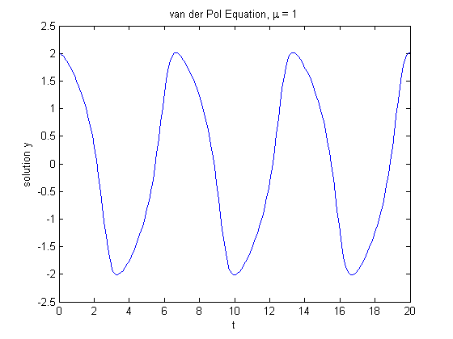
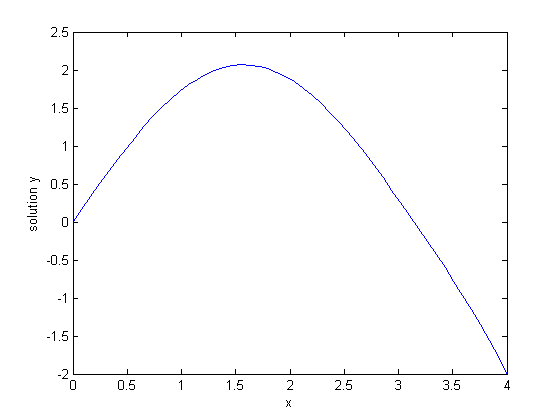
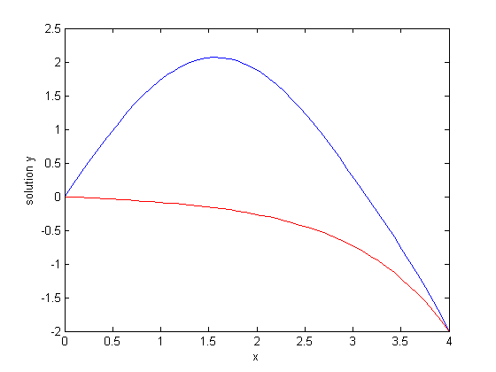
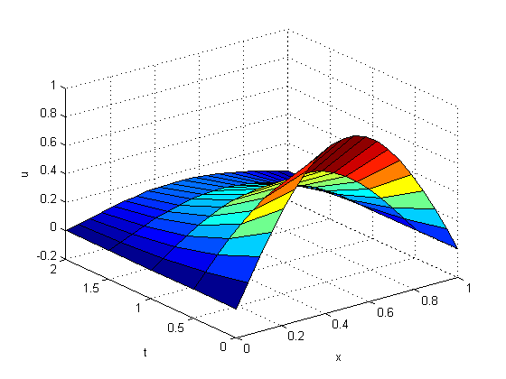

Differential Equations
MATLAB® offers several numerical algorithms to solve a wide variety of differential equations. This demo shows the formulation and solution for three different types of differential equations using MATLAB.
Contents
Initial Value Problem
VANDERPOLDEMO is a function that defines the van der Pol equation.
type vanderpoldemo
function dydt = vanderpoldemo(t,y,Mu) %VANDERPOLDEMO Defines the van der Pol equation for ODEDEMO. % Copyright 1984-2002 The MathWorks, Inc. % $Revision: 1.2 $ $Date: 2002/06/17 13:20:38 $ dydt = [y(2); Mu*(1-y(1)^2)*y(2)-y(1)];
The equation is written as a system of two first order ODEs. These are evaluated for different values of the parameter Mu. For faster integration, we choose an appropriate solver based on the value of the parameter Mu.
For Mu = 1, any of the MATLAB ODE solvers can solve the van der Pol equation efficiently. The ODE45 solver used below is one such example. The equation is solved in the domain [0, 20].
tspan = [0, 20]; y0 = [2; 0]; Mu = 1; ode = @(t,y) vanderpoldemo(t,y,Mu); [t,y] = ode45(ode, tspan, y0); % Plot of the solution plot(t,y(:,1)) xlabel('t') ylabel('solution y') title('van der Pol Equation, \mu = 1')
For larger magnitudes of Mu, the problem becomes stiff. Special numerical methods are needed for fast integration. ODE15S, ODE23S, ODE23T, and ODE23TB can solve stiff problems efficiently.
Here is a solution to the van der Pol equation for Mu = 1000 using ODE15S.
tspan = [0, 3000]; y0 = [2; 0]; Mu = 1000; ode = @(t,y) vanderpoldemo(t,y,Mu); [t,y] = ode15s(ode, tspan, y0); plot(t,y(:,1)) title('van der Pol Equation, \mu = 1000') axis([0 3000 -3 3]) xlabel('t') ylabel('solution y')

Boundary Value Problems
BVP4C solves boundary value problems for ordinary differential equations.
The example function TWOODE has a differential equation written as a system of two first order ODEs.
type twoode
function dydx = twoode(x,y) %TWOODE Evaluate the differential equations for TWOBVP. % % See also TWOBC, TWOBVP. % Lawrence F. Shampine and Jacek Kierzenka % Copyright 1984-2002 The MathWorks, Inc. % $Revision: 1.5 $ $Date: 2002/04/15 03:37:29 $ dydx = [ y(2); -abs(y(1)) ];
TWOBC has the boundary conditions for TWOODE.
type twobc
function res = twobc(ya,yb) %TWOBC Evaluate the residual in the boundary conditions for TWOBVP. % % See also TWOODE, TWOBVP. % Lawrence F. Shampine and Jacek Kierzenka % Copyright 1984-2002 The MathWorks, Inc. % $Revision: 1.5 $ $Date: 2002/04/15 03:37:33 $ res = [ ya(1); yb(1) + 2 ];
Prior to using BVP4C, we have to provide a guess for the solution we want represented at a mesh. The solver then adapts the mesh as it refines the solution.
BVPINIT assembles the initial guess in the form that the solver BVP4C will need. For an initial mesh of [0 1 2 3 4] and a constant guess of y(x) = 1, y'(x) = 0, call BVPINIT like this:
solinit = bvpinit([0 1 2 3 4],[1; 0]);
With this initial guess, we can solve the problem with BVP4C.
The solution sol (below) is then evaluated at points xint using DEVAL and plotted.
sol = bvp4c(@twoode, @twobc, solinit); xint = linspace(0, 4, 50); yint = deval(sol, xint); plot(xint, yint(1,:),'b'); xlabel('x') ylabel('solution y') hold on
This particular boundary value problem has exactly two solutions. The other solution is obtained for an initial guess of
y(x) = -1, y'(x) = 0
and plotted as before.
solinit = bvpinit([0 1 2 3 4],[-1; 0]); sol = bvp4c(@twoode,@twobc,solinit); xint = linspace(0,4,50); yint = deval(sol,xint); plot(xint,yint(1,:),'r'); hold off
Partial Differential Equations
PDEPE solves partial differential equations in one space variable and time.
The examples PDEX1, PDEX2, PDEX3, PDEX4, PDEX5 form a mini-tutorial on using PDEPE. Browse through these functions for more examples.
This example problem uses functions PDEX1PDE, PDEX1IC, and PDEX1BC.
PDEX1PDE defines the differential equation.
type pdex1pde
function [c,f,s] = pdex1pde(x,t,u,DuDx) %PDEX1PDE Evaluate the differential equations components for the PDEX1 problem. % % See also PDEPE, PDEX1. % Lawrence F. Shampine and Jacek Kierzenka % Copyright 1984-2002 The MathWorks, Inc. % $Revision: 1.5 $ $Date: 2002/04/15 03:37:37 $ c = pi^2; f = DuDx; s = 0;
PDEX1IC sets up the initial conditions.
type pdex1ic
function u0 = pdex1ic(x) %PDEX1IC Evaluate the initial conditions for the problem coded in PDEX1. % % See also PDEPE, PDEX1. % Lawrence F. Shampine and Jacek Kierzenka % Copyright 1984-2002 The MathWorks, Inc. % $Revision: 1.5 $ $Date: 2002/04/15 03:37:41 $ u0 = sin(pi*x);
PDEX1BC sets up the boundary conditions.
type pdex1bc
function [pl,ql,pr,qr] = pdex1bc(xl,ul,xr,ur,t) %PDEX1BC Evaluate the boundary conditions for the problem coded in PDEX1. % % See also PDEPE, PDEX1. % Lawrence F. Shampine and Jacek Kierzenka % Copyright 1984-2002 The MathWorks, Inc. % $Revision: 1.5 $ $Date: 2002/04/15 03:37:45 $ pl = ul; ql = 0; pr = pi * exp(-t); qr = 1;
PDEPE requires x, the spatial discretization, and t, a vector of times at which you want a snapshot of the solution. We solve this problem using a mesh of 20 nodes and request the solution at five values of t. Finally, we extract and plot the first component of the solution.
x = linspace(0,1,20); t = [0 0.5 1 1.5 2]; sol = pdepe(0,@pdex1pde,@pdex1ic,@pdex1bc,x,t); u1 = sol(:,:,1); surf(x,t,u1); xlabel('x');ylabel('t');zlabel('u'); hold on u1 = sol(:,:,1); surf(x,t,u1); xlabel('x'); ylabel('t'); zlabel('u');